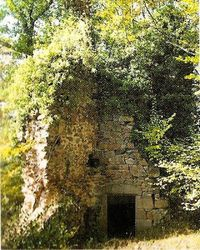
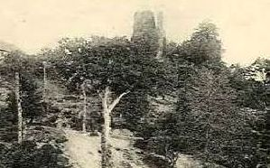
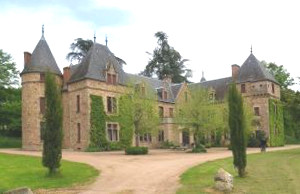
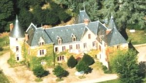
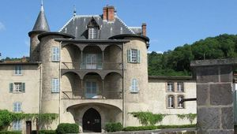

Recensement Jean-Claude Truffet
| Département | 03 — Allier |
| Canton | Lapalisse |
| Commune | Barrais-Bussolles |
| Type d'édifice | Château |
| Période d'origine | XIV-XVII |





Six châteaux à Barais-Busolles, Barrais du XVIIIe siècle, Bruyère du XIV-XIXe siècle, Bussolles gothiques restauré XIXe siècle, Quirelle XIV-XVe siècle Logis tours aux angles, Villette XV-XIXe siècle et le fort de Montjournal vestiges du XIVe siècle. BARRAIS En 1302, Chatard Marcenat reconnait tenir en fief du duc Bourbon la motte et le bois de Bar. En 1443, Louis de Lavieu, chevalier, époux de Catherine de Lespinasse fit aveu à son tour de la motte, terre et seigneurie de Barrais. Famille Campionnet , fondateur et maître des Forges. BUSSOLLES, le 19 juin 1375, Jean Albert fit aveu du fief de Bussolles au seigneur de La Palisse. A la fin du siècle, la famille Obeilh prit le titre de seigneur de Bussolles et racheta, en 1455, la justice de la terre à Jean d'Orvalet, écuyer. En 1503, Jehan Obeilh, écuyer, reconnaît tenir en fief de la duchesse de Bourbon sa maison et domaine de Bussolles. Les Obeilh conservent la terre jusqu'au milieu du XVIIe siècle. Au XIXe siècle, elle fut acquise par Pierre de La Faige et resta dans cette famille jusqu'à la fin de XIXe siècle. MONTJOURNAL, vestiges, mais on devine le plan primitif. Au milieu du XIIe siècle, une fille de la famille de Montjournal, Perronne, est citée parmi les relieuses de Marcigny, ce n'est qu'à partir de 1375 qu'un seigneur de Montjournal est connu conme détenteur du fief du lieu. En mars 1461, Pierre de Montjournal racheta à Jacques de Rollat la justice de son fief, alors qu'en 1503 François de Montjournal possédait la justice de Bussolles et tenait en arrière fief de la duchesse de Bourbon sa "maison où y a mothe, fossée, pont-levis. Au début du XVIIe siècle, la terre passa aux Obeilh et,en 1612, Louis d'Obeilh était seigneur de Bussolles et de Montjournal. VILLETTE, Villette au XVIe siècle, la maison de Villette appartenait à Robert Desset, probablement issu de la communauté voisine des Desserts, puis fut possédée par une famille Martin, originaire aussi de Barrais. Au début du XVIIIe siècle, Gilbert Jacquelot, ancien curé d'Huillaux, fit réparer et agrandir la vieille construction de Villette, pour y établir un refuge de filles repenties. Vendue aux carmélites de Moulins, la maison de Villette passa au milieu du XIXe siècle à la famille de Riberolles, venue de Joze, dans le Puy-de-Dôme.
Barrais, le domaine seigneurial de Bagneux, bordé d'un parc et d'un plan d'eau, se niche au creux d'un vallon, le château fut construit en 1224. La restauration effectuée au début du XVIIIe siècle lui a apporté ses parquets, boiseries, plafonds à caissons et cheminées en pierre. Bruyère la maison actuelle, qui a remplacé la maison forte du XIVe siècle, a été entièrement reconstruite au début du XIXe siècle. Bussolles était une forteresse de plan quadrangulaire, cantonnée de quatre tours carrées massives et d'une tour ronde, en appareil défensif de la porte d'entrée, a conservé quelques éléments qui semblent dater du XIVe siècle, mais a été profondément remanié. Le corps de logis, de plan barlong, à deux niveaux, a conservé une belle tour qui flanque la façade en avant-corps. L'autre angle est flanqué d'une tour ronde un peu basse, couverte d'un toit conique. Dès le XVIe siècle, des ouvertures, souvent anarchiques, ont éclairé la façade et les toits. Montjournal, ruines du château. De plan carré, flanqué de tours à ses quatre angles, est édifié sur une butte dominant la Têche. Grâce à un système de digues, ce ruisseau alimentait un étang qui enserrait le château. On raconte qu'un jeu de quilles en or y est caché. Installée sur un étroit promontoire au fond d'un ravin, la Tour Pourçain se dresse tout contre un vieux chemin. Autrefois appelée la "Motte des Pousins", cet édifice fortifié fut édifié par les sires de Bar au XIVe siècle, elle fut plusieurs fois remaniée au cours des XVe et XVIe siècles. L'édifice comprenait primitivement trois étages munis chacun d'une cheminée. Le rez-de-chaussée est voûté. Une croisée à meneaux permet d'éclairer l'intérieur qui comprend une cheminée sculptée en grès et un four à pain. Le dernier étage était sans doute surmonté d'une terrasse crénelée. En partie rasé, il fut remplacé par une toiture qui s'effondra en 1920.
Famille de Pierre de La Faige Famille de Montjournal"
Châteaux de Barrais, de Bussolles, de Vilette er vestiges de Montjournal.